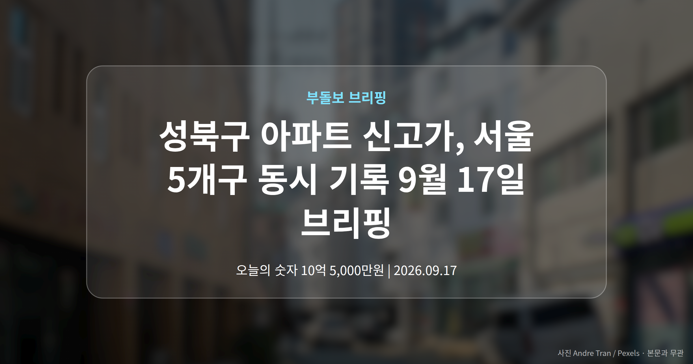
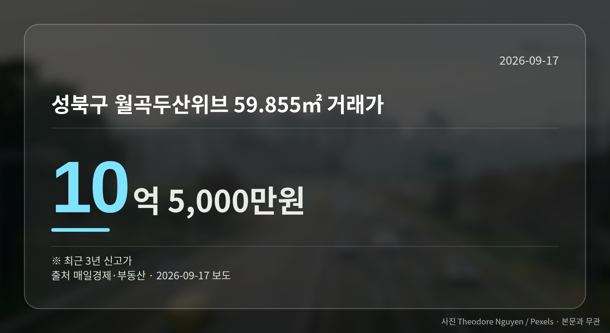
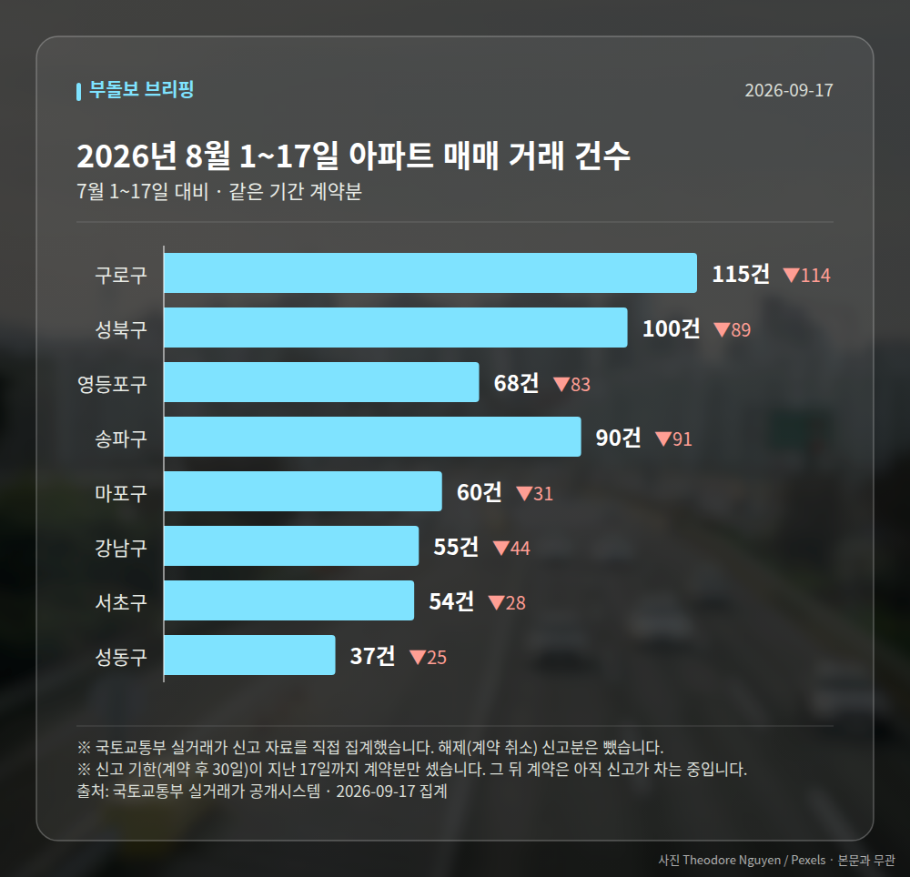

이 글은 2026년 9월 17일 기준으로 정리한 내용입니다. 실거래 거래 건수는 2026년 8월 1~17일 계약분(신고 기한이 지난 것), 전세가율 등은 2026년 7월 신고분입니다.
오늘 서울 부동산 소식의 핵심은 '동시다발'입니다. 성북구 아파트 신고가를 비롯해 영등포·구로·마포·양천구까지, 서로 떨어진 다섯 개 자치구에서 최근 3년 내 신고가 거래가 나란히 확인됐습니다.
초고가 단지인 강남구 압구정동에서는 97억3000만원 거래도 기록됐습니다. 중저가부터 초고가까지 폭이 넓다는 점이 오늘의 특징입니다.
성북구에서는 두 건입니다. 월곡두산위브 전용 59.855㎡가 10억5000만원, 정릉힐스테이트3차 59.98㎡가 8억1500만원에 거래됐습니다.
두 건 모두 신고가(그 단지에서 지금까지 나온 거래가 가운데 가장 높은 값)로, 여기서는 최근 3년을 기준으로 한 수치입니다.

같은 날 확인된 여섯 건을 표로 모았습니다. 모두 최근 3년 신고가입니다.
| 단지(전용면적) | 거래가 |
|---|---|
| 성북 월곡두산위브 59.855㎡ | 10억 5,000만원 |
| 성북 정릉힐스테이트3차 59.98㎡ | 8억 1,500만원 |
| 영등포 당산현대5차 84.69㎡ | 19억 4,300만원 |
| 구로 하버라인3단지 59.86㎡ | 7억 7,000만원 |
| 마포 성산1차 풍림 59.85㎡ | 8억 3,000만원 |
| 양천 학마을1단지 49.99㎡ | 7억 1,500만원 |
눈에 띄는 건 면적대입니다. 여섯 건 가운데 다섯 건이 전용 60㎡ 이하, 이른바 소형 구간에서 나왔습니다.
당산현대5차만 84㎡대로, 앞서 본 다른 단지들과는 가격 수준 자체가 다릅니다.
중저가·중소형 단지를 중심으로 매수세가 유지되고 있다는 신호로는 읽을 수 있습니다. 서울 곳곳에서 같은 날 확인됐다는 점도 그렇습니다.
다만 한계도 분명합니다. 오늘 확인된 자료에는 거래일자와 층수, 거래 배경이 담겨 있지 않았습니다.
같은 단지라도 층과 향에 따라 값 차이가 크기 때문에, 성북구 아파트 신고가 역시 시장 전체의 방향으로 넓히기보다 개별 단지 사례로 두고 보시는 편이 안전합니다.
서울 8개 구에서 계약된 매매는 579건입니다. 7월 1~17일 1084건과 견주면 -505건입니다.
거래가 많은 곳: 구로구 115건(-114) · 성북구 100건(-89) · 영등포구 68건(-83)
신고 기한(계약 후 30일)이 지난 17일까지 계약분끼리 견줬습니다.
구로구 전세가율(전세 보증금 ÷ 매매가)은 가운뎃값 56.4%입니다. 같은 단지·같은 면적 59곳을 견줬습니다.
서울 25개 구 가운데 거래가 가장 크게 움직인 곳: 중랑구 -79.3%(405→84건, 7월 1~17일엔 묵동에 74.6% 몰렸음) · 영등포구 -55.0%(151→68건)
2026년 8월 계약 신고가

→ 그림 파일 img-stats-volume.png 을 이 자리에 올리세요
국토교통부 실거래가 신고 자료를 직접 집계했습니다. 해제(계약 취소) 신고분은 뺐습니다.
여러분이 지켜보는 단지는 올해 들어 실거래가가 어느 쪽으로 움직이고 있나요?
댓글로 알려 주시면 다음 글에 반영하겠습니다.